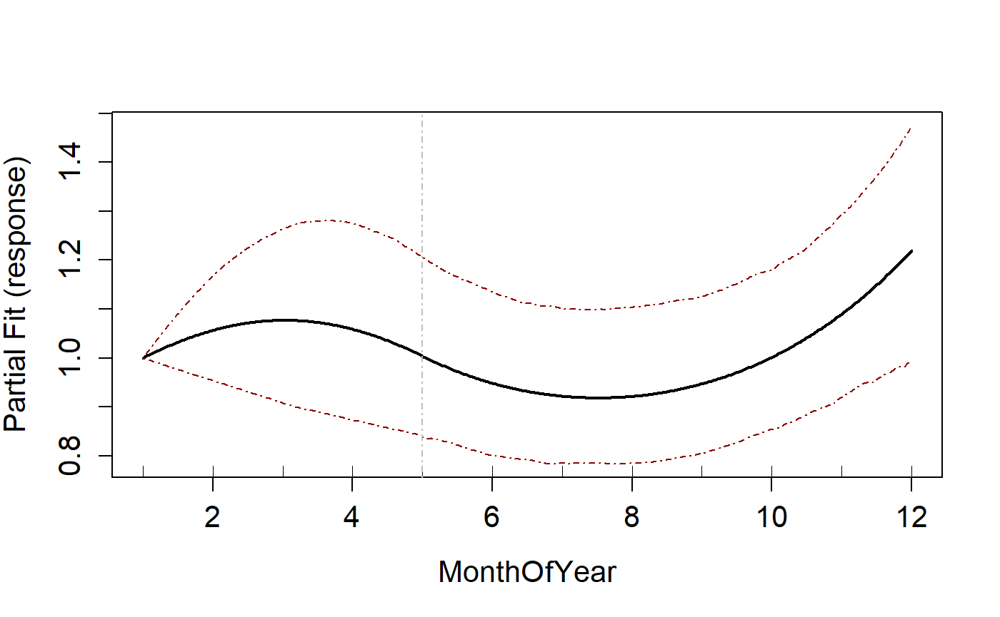
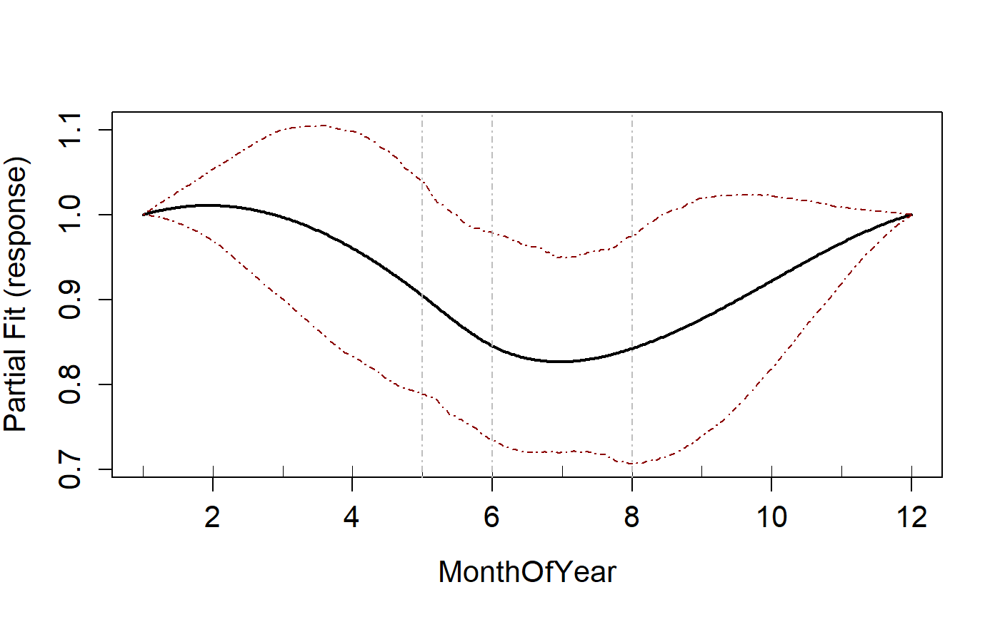
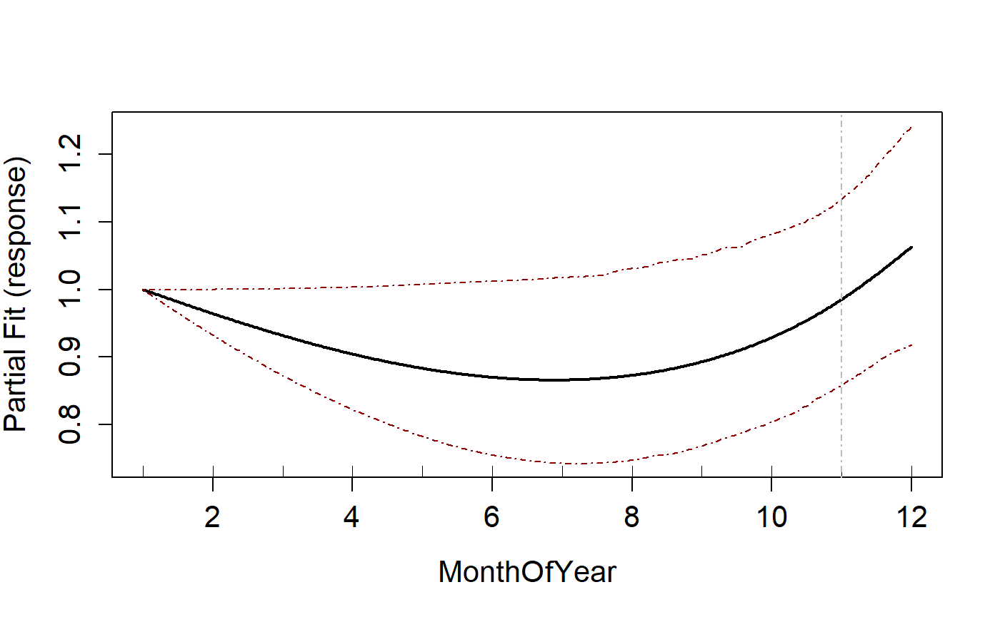
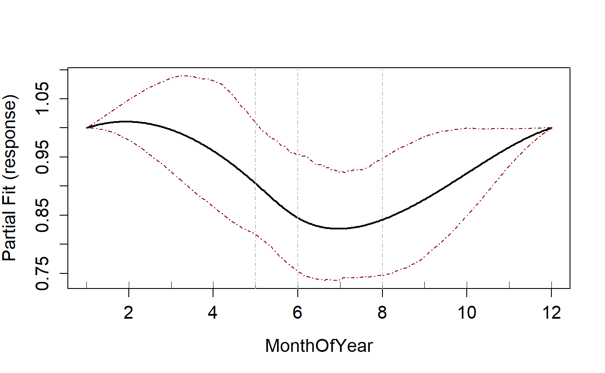
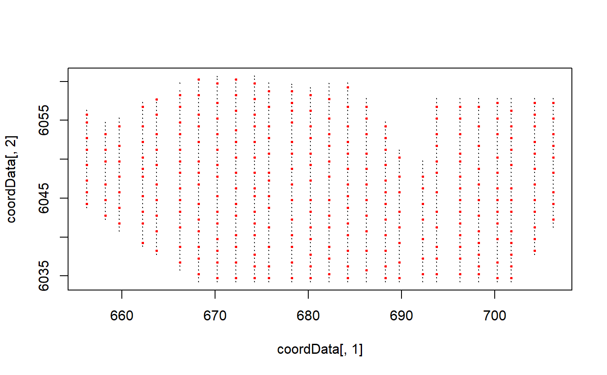
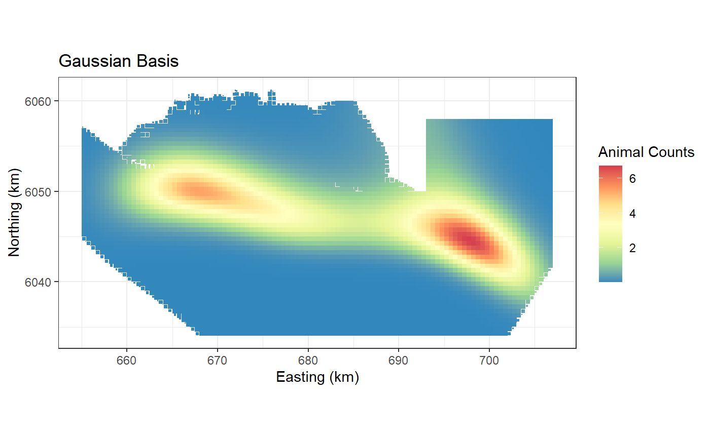
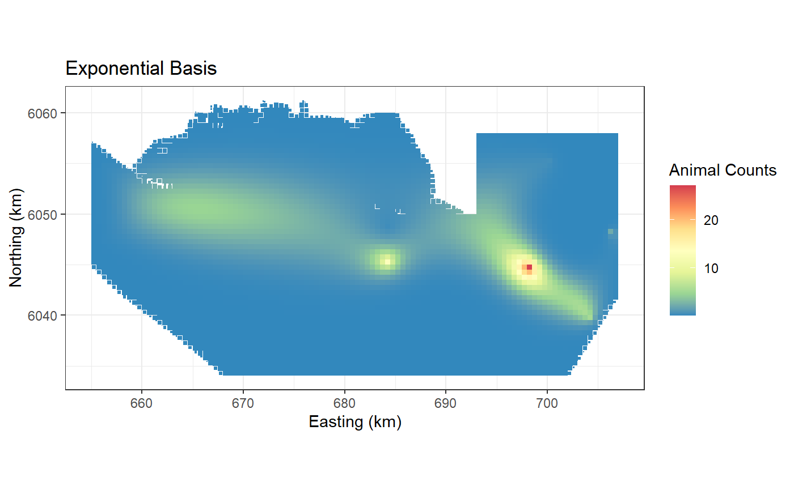

Types of Uni and Bivariate Splines
Lindesay Scott-Hayward
2024-05-08
Source:vignettes/web/FittingDifferentSplines_MRSea.Rmd
FittingDifferentSplines_MRSea.RmdThis document shows how to fit both one and two dimensional splines.
There are three different types of 1D spline available:
- B-spline
- Cyclic Cubic Spline
- Natural Cubic Spline
and two different 2D radial basis functions:
- exponential
- gaussian
One dimensional Smoothing
Starting point
- Load some data
- Specify the variable of interest. In this case we pick month of the year.
- Fit an initial model. For simplicity we fit an intercept only model.
# load data
data(ns.data.re)
ns.data.re$response<- ns.data.re$birds
varlist=c('MonthOfYear')
initialModel<- glm(response ~ 1, family='quasipoisson',data=ns.data.re)Default: B-spline
- This section shows the fitting of a quadratic B-spline. If linear or
cubic B-splines are preferred, change
degreeto 1 or 3 respectively. - The default setting is for B-splines. If the
splinesparameter in thesalsa1dlistis not specified then B-splines will be fitted. - Here I have shown how to add the
splinesparameter to thesalsa1dlistobject.
Note: I have chosen the QBIC for chosing the number and location of knots as it is relatively quick and useful for testing. (Q because we have a Quasi-Poisson model).
# set some input information for SALSA
salsa1dlist<-list(fitnessMeasure = 'QBIC',
minKnots_1d = c(1),
maxKnots_1d = c(3),
startKnots_1d = c(1),
degree = c(2),
gaps = c(0),
splines = c("bs"))
# run SALSA
salsa1dOutput<-runSALSA1D(initialModel,
salsa1dlist,
varlist = varlist,
datain = ns.data.re,
suppress.printout = TRUE)
runPartialPlots(salsa1dOutput$bestModel, data=ns.data.re,
varlist.in = varlist, showKnots = TRUE)
#> [1] "Making partial plots"
Cyclic spline
To fit a cyclic spline, the splines parameter is set to “cc”. To
change the order of a cyclic spline, you can use the degree
parameter (order = degree +1).
Note that even though the minimum knots is set to 1, for a cyclic spline the minimum allowed is 3. This is changed automatically.
#set some input info for SALSA
salsa1dlist<-list(fitnessMeasure = 'QBIC',
minKnots_1d = c(1),
maxKnots_1d = c(3),
startKnots_1d = c(1),
degree = c(2),
gaps = c(0),
splines = c("cc"))
# run SALSA
salsa1dOutput.cc<-runSALSA1D(initialModel,
salsa1dlist,
varlist = varlist,
datain = ns.data.re,
suppress.printout = TRUE)
runPartialPlots(salsa1dOutput.cc$bestModel, data=ns.data.re,
varlist.in = varlist, showKnots = TRUE)
#> [1] "Making partial plots"
Natural Cubic spline
To fit a natural spline, the splines parameter is set to “ns”.
Note that degree is not necessary for this spline type
but it must still be specified in the salsa1dlist object.
You can use NA for this.
#set some input info for SALSA
salsa1dlist<-list(fitnessMeasure = 'QBIC',
minKnots_1d = c(1),
maxKnots_1d = c(3),
startKnots_1d = c(1),
degree = c(NA),
gaps = c(0),
splines = c("ns"))
# run SALSA
salsa1dOutput.ns<-runSALSA1D(initialModel,
salsa1dlist,
varlist = varlist,
datain = ns.data.re,
suppress.printout = TRUE)
runPartialPlots(salsa1dOutput.ns$bestModel, data=ns.data.re,
varlist.in = varlist, showKnots = TRUE)
#> [1] "Making partial plots"
Multiple different splines
To fit more than one type of spline to different variables, this is
specified in the splines parameter in the same way you
would specify the starting knots for example.
varlist=c('MonthOfYear', "x.pos")
#set some input info for SALSA
salsa1dlist<-list(fitnessMeasure = 'QBIC',
minKnots_1d = c(1,1),
maxKnots_1d = c(3,3),
startKnots_1d = c(1,1),
degree = c(2, 2),
gaps = c(0, 0),
splines = c("cc", "bs"))
# run SALSA
salsa1dOutput.multi<-runSALSA1D(initialModel,
salsa1dlist,
varlist = varlist,
datain = ns.data.re,
suppress.printout = TRUE)
runPartialPlots(salsa1dOutput.multi$bestModel, data=ns.data.re,
varlist.in = varlist, showKnots = TRUE)
#> [1] "Making partial plots"
Two dimensional Smoothing
Starting point
This is the same starting point for one dimensional splines if it is only a two dimensional smooth you want.
- Load some data
- specify the variable of interest. In this case we pick month of the year.
- Fit an initial model. For simplicity we fit an intercept only model.
# load data
baselinedata <- filter(nysted.analysisdata, impact == 1, season == 1)
initialModel<- glm(response ~ 1, family='quasipoisson',data=baselinedata)
kg <- getKnotgrid(baselinedata[, c("x.pos", "y.pos")], numKnots = 300, plot = TRUE)
Default: Gaussian Radial Basis
This uses a Gaussian radial basis implemented using
LRF.g(). It is the default and does not need to be
specified.
# make parameter set for running salsa2D
salsa2dlist<-list(fitnessMeasure = 'QBIC',
knotgrid = na.omit(kg),
startKnots=10,
minKnots=2,
maxKnots=20,
gap=0)
salsa2dOutput<-runSALSA2D(initialModel,
salsa2dlist,
d2k=distMats$dataDist,
k2k=distMats$knotDist,
basis = "gaussian", ##
suppress.printout = TRUE)
preddata$preds.g <- predict(object = salsa2dOutput$bestModel,
newdata = preddata, g2k = p2k)
ggplot() +
geom_tile(data=preddata, aes(x.pos, y.pos, fill=preds.g,
height=sqrt(area), width=sqrt(area))) +
xlab("Easting (km)") + ylab("Northing (km)") + coord_equal() +
theme_bw() + ggtitle("Gaussian Basis") +
scale_fill_distiller(palette = "Spectral",name="Animal Counts")
Exponential Basis
This uses an exponential radial basis implemented using
LRF.e(). It is more peaked at the knot than the gaussian
and for this reason I have used a larger number of start knots.
# make parameter set for running salsa2D
salsa2dlist<-list(fitnessMeasure = 'QBIC',
knotgrid = na.omit(kg),
startKnots=10, ##
minKnots=2,
maxKnots=20,
gap=0)
salsa2dOutput.exp<-runSALSA2D(initialModel,
salsa2dlist,
d2k=distMats$dataDist,
k2k=distMats$knotDist,
basis = "exponential", ##
suppress.printout = TRUE)
preddata$preds.e <- predict(object = salsa2dOutput.exp$bestModel,
newdata = preddata, g2k = p2k)
ggplot() +
geom_tile(data=preddata, aes(x.pos, y.pos, fill=preds.e,
height=sqrt(area), width=sqrt(area))) +
xlab("Easting (km)") + ylab("Northing (km)") + coord_equal() +
theme_bw() + ggtitle("Exponential Basis") +
scale_fill_distiller(palette = "Spectral",name="Animal Counts")